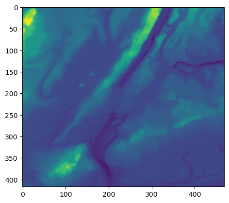
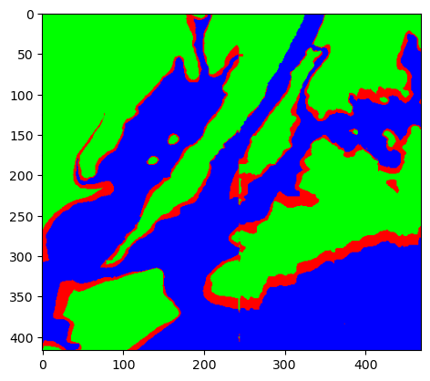
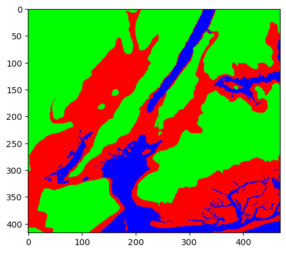

Part I. Inputs#
While we have been manually entering in variables to generate our outputs, we can also directly get input from the user.
Since Python doesn’t know what you will be entering (number, words, etc.), it stores everything as a string, and leaves it to the user to convert it to what they want. For example, if we wanted a number, we need to convert the letters the user used into a number. The basic conversion functions are:
int(): converts a string (series of characters) into the corresponding integer (whole number).float(): converts a string (series of characters) into the corresponding floating point number (real number).str(): converts a number into the corresponding sequence of characters.
from jupyturtle import *
n = 3
make_turtle()
for i in range(n):
forward(50)
left(360/n)
my_string = '240'
print(my_string, type(my_string))
240 <class 'str'>
my_int = int('240')
print(my_int, type(my_int))
240 <class 'int'>
my_float = float('240')
print(my_float, type(my_float))
240.0 <class 'float'>
Notice that we cannot mix two different types unless they are numbers.
a = 400 # type int
b = 40.4 # type float
print(a/b)
9.900990099009901
a = 43 # type int
b = "2" # type string
print(a+b)
---------------------------------------------------------------------------
TypeError Traceback (most recent call last)
Cell In[19], line 4
1 a = 43 # type int
2 b = "2" # type string
----> 4 print(a+b)
TypeError: unsupported operand type(s) for +: 'int' and 'str'
However intrestingly:
a = 4 # type int
b = "Hi" # type string
print(a*b)
HiHiHiHi
Python allows users to get input (in the form of a string) by using the input function.
# Takes input from the user and stores it in variable my_string
my_string = input("Enter your name: ")
print(my_string)
Ryan
a = int(input("Enter the first number: "))
b = int(input("Enter the second number: "))
print(a*b)
304
# Take in a color from the user, and draw a square in that color
from jupyturtle import *
my_color = '#' + input("Enter your hex color: ")
make_turtle()
set_color(my_color)
for i in range(4):
forward(50)
left(90)
Note that the input is take in the form of a string, in order to use it as a number, you must convert the type.
# Convert from kilometers to miles
print("This program will convert kilometers to miles")
#1. Input the distance in kilometers (call it km)
km = float(input("Enter distance in kilometers: "))
#2. Calculate the distance in miles as 0.621371*km
miles = 0.621371*km
#3. Output miles
print(km, "km is equal to ", miles, "miles")
This program will convert kilometers to miles
20.5 km is equal to 12.7381055 miles
Task: Write a program to take in two numbers from the user, and print out the sum of the two numbers
a = input("Enter your first number: ")
b = input("Enter your second number: ")
print("The sum of", a, "and", b, "is", a+b)
The sum of 10 and 12 is 1012
Part II. If Statements#
Boolean (logical) operators#
Logical or Boolean operators use what is known as Boolean logic to carry out logical operations on the computer. We’ll review these rules and demonstrate how they operate in Python.
The logical operators are and, or, and not.
Unlike math operators, which return numbers, boolean operators return booleans.
not(Mary went to the store) = Mary did not go to the store
Booleans adhere to the following logic:
and: True if both are trueor: True if at least one is truenot: True only if false
Following this logic, all of the following return True:
True and True
True
True or False
True
True or False
True
not False
True
# two nots cancel one another out
not(not True)
True
a = 2 # assignment
a == 2 # comparison
Comparison Operators#
Comparison operators compare the values on either side of the operator, returning a boolean from the comparison.
Python uses the following comparison operators:
==: values are equal!=: values are not equal<: value on left is less than value or right>: value on left is greater than value on right<=: value on left is less than or equal to value on right>=: value on left is greater than or equal to value on the right
We mentioned previously that = is used for assignment rather than equality. However, there is a way to test whether two values are equal. To test equality, you’ll use the == comparison operator. This determines whether the left-hand side of the expression is equal to the right-hand side, returning the boolean True if they are equal, and False otherwise.
Following this logic, all of the following return True:
a = 2
not(a*2 == 4)
False
'aaa' != 'abc'
True
9 > 4
True
12 <= 20
True
Task: How would each of the following boolean expressions evaluate?
True and False
True and not True or False
True and not False
'' and 'a'
'a' == ('' and 'a')
'a' == 'a' and 'a' == 'b'
'a' == ('' and 'a')
bool('')
False
if statements#
Conditional statements begin with an if statement. They can optionally have elif and else, which we’ll get to in just a second, but they must have an if statement and that if statement must come first. The code within an if statement will execute if the condition following if evaluates as True.
if statement, and then only execute a set of code if the condition evaluates as True.
if condition:
# execute this code
For example, if we define condition to store the boolean True, the conditional if statement, will then execute the print() statement within the condition.
if False:
print('This code executes if the condition evaluates as True.')
print("Hello world")
print("Not in the block")
Not in the block
Note that if condition were to store the Boolean False, this conditional statement would produce no output, as the conditional if statement did not evaluate as True. The code within the conditional is only executed if the condition evaluates as True.
condition = False
if condition:
print('This code executes if the condition evaluates as True.')
else statement#
After an if statement you can add an optional else statement. The code within this conditional will execute if the if conditional statement did not evaluate as True.
if, you can use an else that will run if the conditional(s) above have not run.
condition = False
if condition:
print('This code executes if the condition evaluates as True.')
else:
print('This code executes if the condition evaluates as False')
This code executes if the condition evaluates as False
Note that the syntax for both the if and the else statements require a colon at the end of the line and the lines of code within the if or else statement to be indented.
Futher, it’s important to note that only one condition can be met, so either the code for the if statement or the code for the else statement will execute, but never both.
a = int(input("Enter your first number"))
b = int(input("Enter your second number"))
if a > b:
print("The first number is greater than the second number")
if b > a:
print("The second number is greater than the first number")
if a == b:
print("The numbers are equal!")
The numbers are equal!
elif statement#
The final type of conditional statement is the elif statement. These too are optional, and are read as “else if”. After an if statment, an elif statement can be used to check additional conditions. As with if statements, the code within an elif statement will only execute if the condition specified evaluates as True.
if statement, you can have any number of elif`s (meaning 'else if') to check other conditions.
Here, we have two variables condition_1 storing False and condition_2 storing True. As before, the code for only one of these conditions will execute. If the if condition evaluates as True, the code within that statement will execute. Otherwise, if (elif) the condition in the elif statement evaluates as True, the code within the elif statement will execute. Finally, if neither the if or elif evaluate as True, the code within the else statment will execute.
condition_1 = False
condition_2 = True
if condition_1 and condition_2:
print('This code executes if both conditions are True.')
elif condition_1:
print('This code executes if just condition_1 evaluates to True.')
elif condition_2:
print('This code executes if condition_1 did not evaluate as True, but condition_2 does.')
else:
print('This code executes if both condition_1 and condition_2 evaluate as False')
This code executes if condition_1 did not evaluate as True, but condition_2 does.
if statement1:
action1
elif statement2:
action2
elif statement3:
action3
else:
elseAction
In the example above, as condition_1 is False, the code beneath the if statement does not execute. However, the elif condition (condition_2) evaluates as True, printing the string within the elif statement.
language = input("Enter your favourite language: ")
if language == "Python":
print("Yay!")
elif language == "English":
print("Not a programming language.")
else:
print("Get yourself a programming language!")
number = int(input("Enter your favourite number: "))
if number < 5:
print('your number is less than five...')
elif number >= 5:
print('your number is greater than or equal to five!')
# else is not required
subject1 = 'Computer Science'
subject2 = 'English'
if subject1 == 'Computer Science' or subject2 == 'Computer Science': # If one of the subjects I know is CS
if subject1 == 'Math' or subject2 == 'Math': # furthermore I also know Math
print("Wow, you know both Computer Science and Math?!")
else: # but I don't know math
print("Now that you know Computer Science, you should do some math!")
elif subject1 == 'Math' or subject2 == 'Math': # If one of the subjects I know is Math
print("Oh you like math? Try some computer science!")
else:
print("You should learn some CS or Math!!!") # If I know neither CS nor Math
Now that you know Computer Science, you should do some math!
Task: Write a program that takes in an input(integer) from the user that represents their grade
If the input is less than or equal to 5, print out “You are in Elementary School.”
If the input is less than or equal to 8, but greater than 5, print out “You are in Middle School.”
If the input is less than or equal to 12, but greater than 8, print out “You are in High School.”
And if none of the previous criteria are met, print out “You are not in grade school.”
grade = int(input("Enter your grade"))
if grade <= 5:
print("You are in elementary school")
elif grade <=8 and grade > 5:
print("You are in middle school")
elif grade <=12 and grade > 8:
if grade == 9:
print("You are a high school freshman")
elif grade == 10:
print("You are a high school sophomore")
elif grade == 11:
print("You are a high school junior")
else:
print("You are a high school senior")
else:
print("You are not in grade school")
Part III: Loading data#
For the last part of the lab, let’s combine what we have learned about images and decisions to make a flood map of the New York metropolitian area.
Using numpy, we can look at the data with a default ‘color map’ that assigns blue to smaller values in the grid (or array) and red to the larger values:
For this section of the lecture, you’ll need to download the elevationsNYC.txt file which can be done by opening the link below, right clicking the page, and save as. The file should be stored in the same directory as this notebook.
import numpy as np
import matplotlib.pyplot as plt
#Read in the data to an array, called elevations:
elevations = np.loadtxt('elevationsNYC.txt')
#Display the plot:
plt.imshow(elevations)
<matplotlib.image.AxesImage at 0x7fcf0ccb7cb0>

You can see the Hudson River and New York Harbor (dark blue) and the ridges of the Palisades along the Hudson and mountains in Staten Island and western New Jersey in yellow.
We want to color the image using the following scheme
if elevation <= 0:
# Below sea level
Color the pixel blue
elif elevation <= 6:
# Flooding likely
Color the pixel red
else:
# 6 foot above sea level, unlikely to flood
Color the pixel green
Import the libraries to manipulate and display arrays.
Read in the NYC data and store in the variable, elevations
Create a new array, floodMap, to hold our colors for the map.
For each element in elevations, make a pixel colored by the schema above.
Display the image.
We’ll use a very simple (but a bit garish) color scheme, with our “blue” being 0% red, 0% green, and 100% blue. And similarly, the “red” and the “green” we’ll use will be 100% of each, 0% of the others
#Import the libraries for arrays and displaying images:
import numpy as np
import matplotlib.pyplot as plt
#Read in the data to an array, called elevations:
elevations = np.loadtxt('elevationsNYC.txt')
#Take the shape (dimensions) of the elevations
# and add another dimension to hold the 3 color channels:
mapShape = elevations.shape + (3,)
#Create a blank image that's all zeros:
floodMap = np.zeros(mapShape)
for row in range(mapShape[0]):
for col in range(mapShape[1]):
if elevations[row,col] <= 4: #Sea level is at 0 ft
# Below sea level
floodMap[row,col,2] = 1.0 #Set the blue channel to 100%
elif elevations[row,col] <= 10: #Storm surge up to 4 feet high
# Flooding likely
floodMap[row,col,0] = 1.0 #Set the red channel to 100%
else:
floodMap[row,col,1] = 1.0 #Set the green channel to 100%
# Display the image:
plt.imshow(floodMap)
<matplotlib.image.AxesImage at 0x7fcf04637ed0>

These are modification tasks, do NOT write new code, use the provided code as a baseline.
Task A: We’ve recieved word that NYC’s next hurricane is going to have tides of up to 4 feet high, plot in red the areas that are likely to be in danger!
Task B: Suppose that New York’s sea level receded by 2 feet, what would the new map look like.
#Import the libraries for arrays and displaying images:
import numpy as np
import matplotlib.pyplot as plt
#Read in the data to an array, called elevations:
elevations = np.loadtxt('elevationsNYC.txt')
#Take the shape (dimensions) of the elevations
# and add another dimension to hold the 3 color channels:
mapShape = elevations.shape + (3,)
#Create a blank image that's all zeros:
floodMap = np.zeros(mapShape)
for row in range(mapShape[0]):
for col in range(mapShape[1]):
if elevations[row,col] <= -2:
# Below sea level
floodMap[row,col,2] = 1.0 #Set the blue channel to 100%
elif elevations[row,col] <= 6:
# Flooding likely
floodMap[row,col,0] = 1.0 #Set the red channel to 100%
else:
# 6 foot above sea level, unlikely to flood
floodMap[row,col,1] = 1.0 #Set the green channel to 100%
# Display the image:
plt.imshow(floodMap)
<matplotlib.image.AxesImage at 0x79f9c0e53c50>
